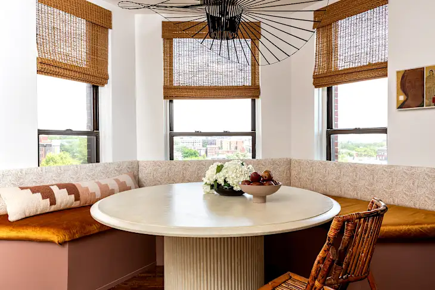
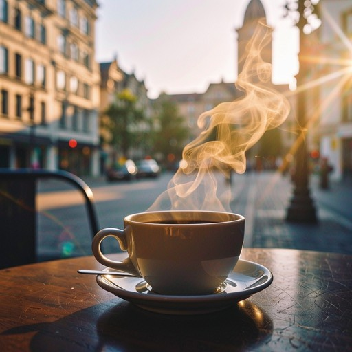
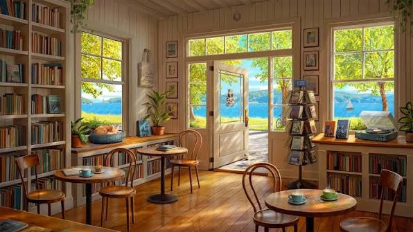

Through the Day
From quiet mornings to lively evenings
The mood inside Board & Brew shifts gently throughout the day, moving from calm coffee hours to easy afternoon conversations and into evenings filled with games, shared tables, and a little more energy in the room.

Morning
Soft light, slow starts, and the kind of calm that lets the day open gently
Early hours feel quieter and more spacious, with warm coffee, natural light, and a setting that makes it easy to read, work softly, or simply enjoy a slower beginning. It’s the kind of time when everything feels unhurried, giving you a calm place to settle in before the day gets bus

Afternoon
Comfortable energy for catch-ups, casual play, and time that stretches naturally
As the day settles in, the space begins to fill with easy conversation, shared drinks, and lighter game rounds that bring people together naturally. Guests often linger a little longer than planned, enjoying the relaxed atmosphere.

Evening
Fuller tables, brighter voices, and a social rhythm built around games and company
Evenings bring the most movement to the room, with group tables, shared laughter, and a lively energy that makes every corner feel more alive. It’s the time when friends settle in for longer conversations, games begin to draw people together.